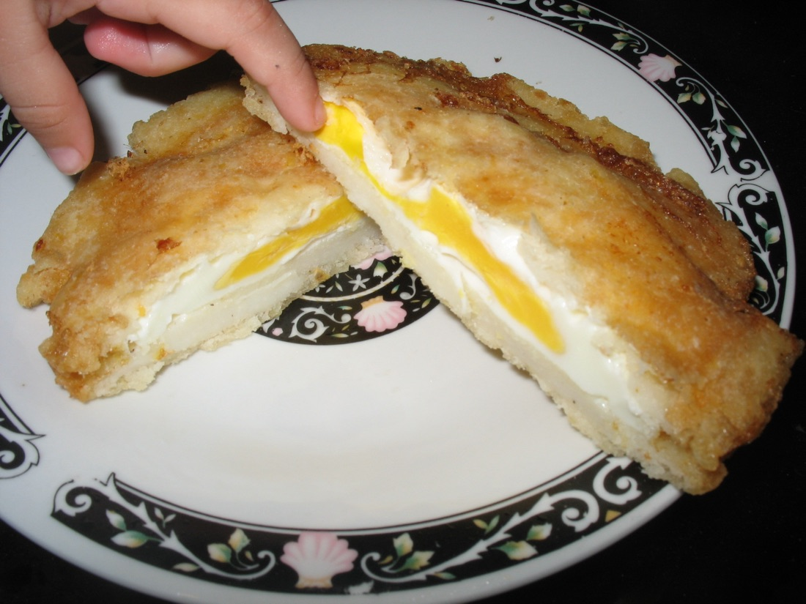

Food & cuisine
A country, told one bite at a time.
Colombian cooking changes with the landscape. Come hungry for corn, fruit, warm bowls, and a table that always has room for one more.
Meet a few favourites
A coastal favourite
Meet the arepa de huevo
Golden and crisp outside, soft and savoury inside, this egg-filled arepa is a much-loved bite from Colombia's Caribbean coast. The wider arepa family shows how a simple corn staple can take on a different character from one region to the next.
Photo by Jdvillalobos · CC BY 3.0
A first taste
Three regions, three invitations
A tiny menu for a very big country.
| Region | Try this | A little about it |
|---|---|---|
| Caribbean | Arepa de huevo | A corn cake fried with egg inside; crisp at the edges and made for a seaside snack. |
| Andean highlands | Ajiaco | A comforting chicken-and-potato soup, traditionally flavoured with the herb guasca. |
| Antioquia | Bandeja paisa | A generous platter that can bring together beans, rice, egg, arepa, and other accompaniments. |
Dish descriptions are concise paraphrases of the Colombian cuisine article; see the credits for source and license information.
Leave room for dessert
The best ingredient is curiosity.
Ask what is local, follow the market smells, and let someone recommend the next bite.